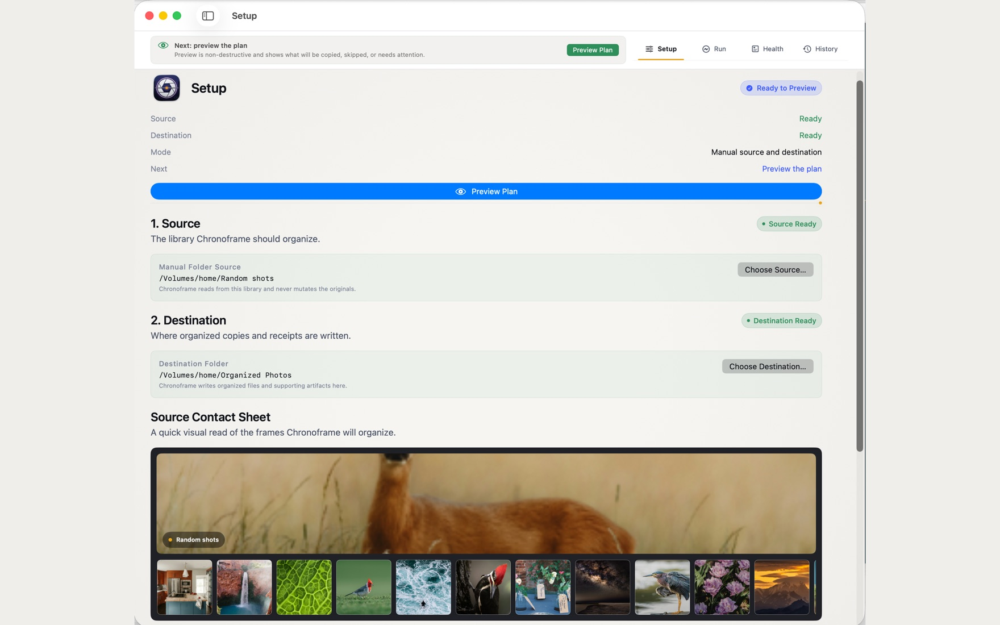

Step 1 · Setup
Point Chronoframe at the mess
Pick the folder to organize and a separate destination for the clean copies. Chronoframe reads the source and never mutates it. A contact sheet gives you a quick visual read of what's about to be organized before you commit to anything.
- Default
YYYY/MM/DDlayout, or switch to year/month or event folders in Settings. - Source is read-only; the destination receives copies and receipts.